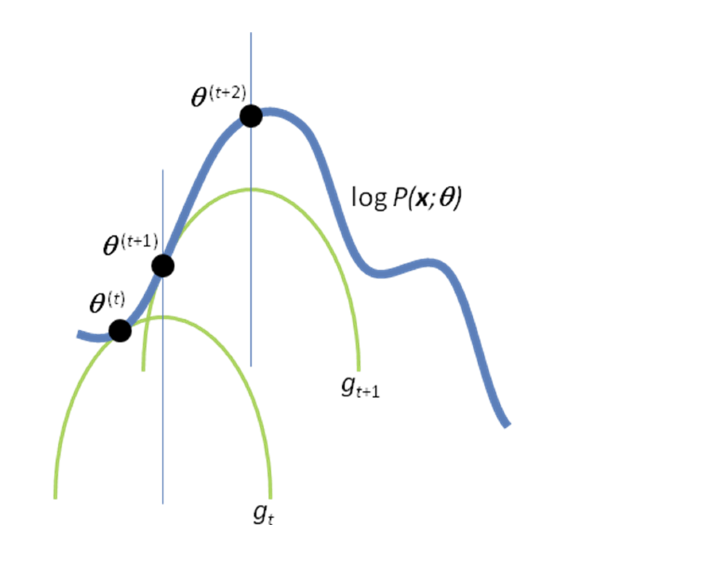

Expectation-Maximization Algorithm
An intuitive introduction to the Expectation-Maximization algorithm, its mathematical foundations, and how it can be used to estimate hidden variables in probabilistic models.

An intuitive introduction to the Expectation-Maximization algorithm, its mathematical foundations, and how it can be used to estimate hidden variables in probabilistic models.